오늘은 안산 일동 파스타 피자 맛집 스푼위에포크를 소개해드리겠습니다.
위치는 안산대학교 앞에 위치해 있으며,
가까운 역은 4호선 한대앞역에서 대중교통을 이용해서 약 15분 정도 소요되는 거리에 있습니다.
자차를 이용하실 경우 따로 주차장이 마련되어 있지 않아매장 앞쪽 도로변에 통행에 방해되지 않게 주차하시면 됩니다.
운영시간은 매일 오전 10시 45분부터 오후 9시까지입니다.
첫 오더는 오전 11시 마지막 오더는 오후 8시 30분까지입니다.
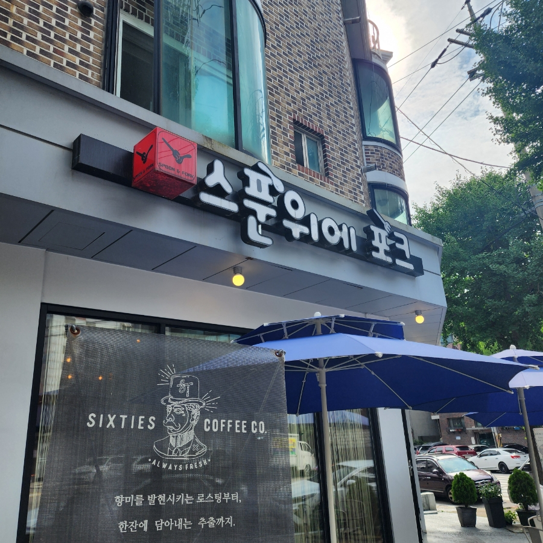
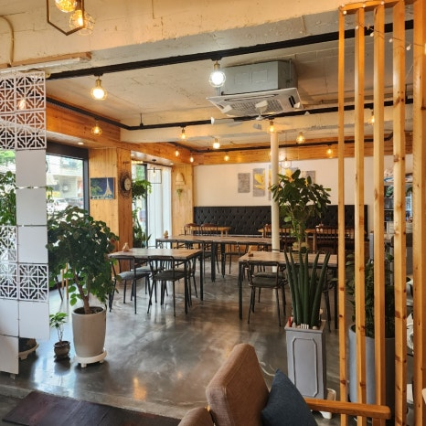
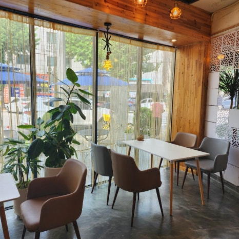
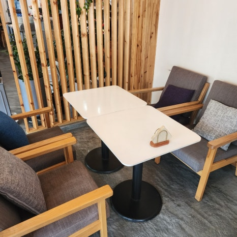
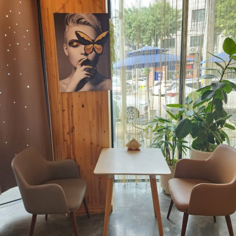
4인석 2인석으로 다양하게 배치되어 있고,
전체적으로 안락한 느낌이 드는 매장입니다.
아주아주 늦은 점심을 먹으러 들렀던 터라 매장이 한산한 편이였습니다.
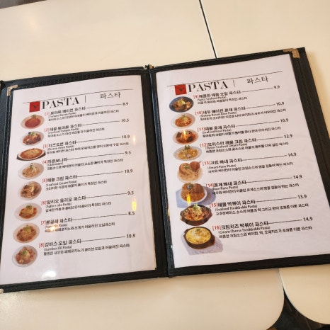
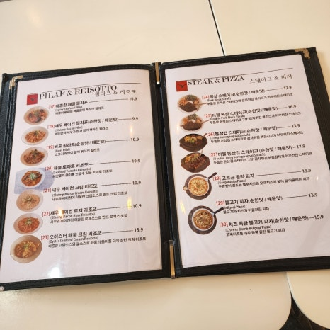
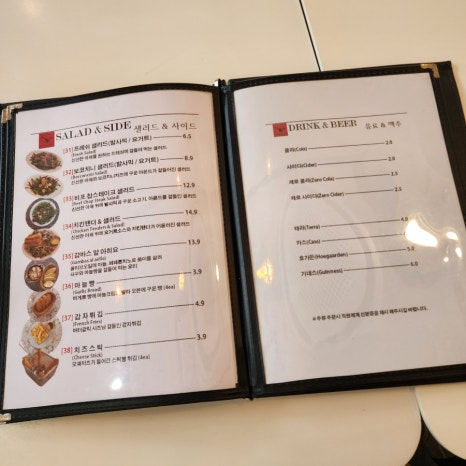
크게 파스타, 필라프, 리조또, 스테이크, 피자, 샐러드, 사이드 메뉴로 나누어져 있습니다.
저희는 크림빠네파스타 , 불고기 피자, 치킨텐더 샐러드, 비프 필라프, 감자튀김을 주문했습니다.
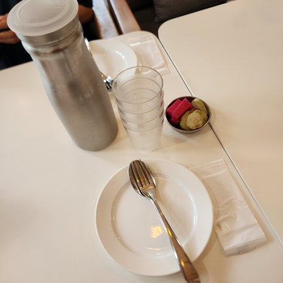
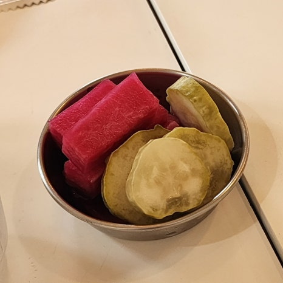
주문 후 물과 컵, 개인 접시와 포크, 스푼, 물티슈, 직접 담그신 피클을 준비해 주셨습니다.
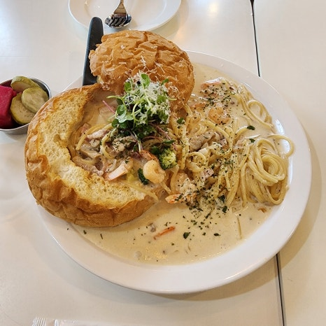
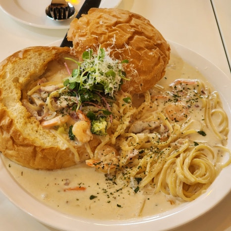
주문한 크림빠네파스타가 먼저 준비되었습니다.
꾸덕꾸덕해 보이는 크림 파스타가 빵과 함께 준비되었습니다.
새우와 베이컨, 브로콜리 등이 들어있습니다.
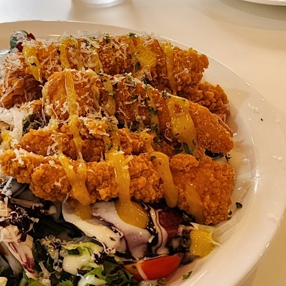
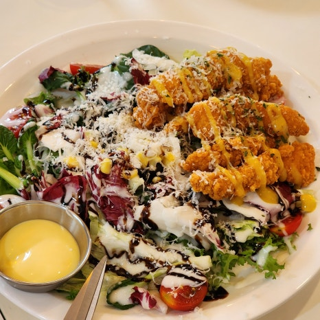
이어서 치킨텐더 샐러드가 나왔습니다.
손가락보다 크고 긴 치킨 텐더 여섯조각과 싱싱한 샐러드 야채와 토마토에 치즈가루와
요거트 드레싱이 뿌려져 나왔습니다.
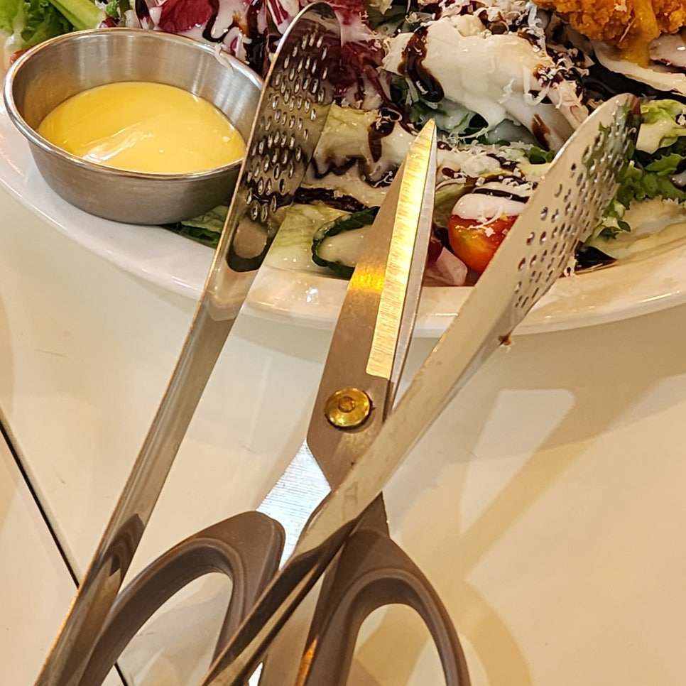
치킨텐더를 통으로도 드셔도 되지만 원하는 크기로 잘라먹을 수 있게
집게와 가위를 가져다주셨습니다.
안산 일동 빠네파스타 맛집 스푼위에포크의
두 가지 메뉴만 나왔는데도 벌써 푸짐해 보입니다.
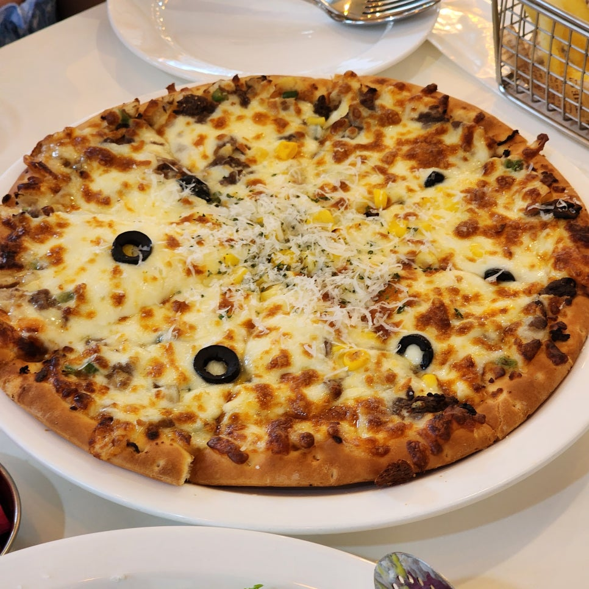
이어서 불고기 피자도 나왔습니다.
토핑과 치즈가 듬뿍 올라간 불고기 피자입니다.
주문 시 순한 맛과 매운맛을 고를 수 있는 점이 좋습니다.
아이와 같이 방문했기에 이번에는 순한 맛으로 시켰습니다.
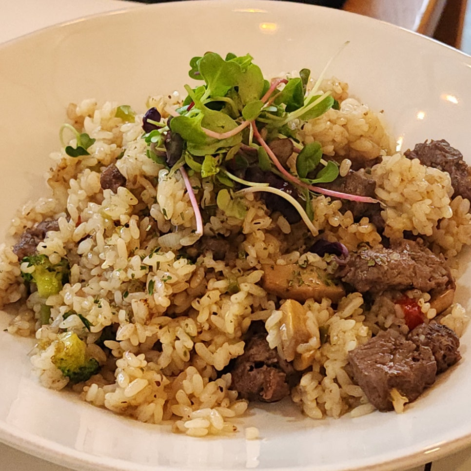
한국인이라면 밥 메뉴도 빠질 수 없죠 !
주문했던 비프 필라프도 나왔습니다.
비프 필라프도 순한 맛과 매운맛을 고를 수 있습니다.
고기가 큼직하게 양이 넉넉합니다.
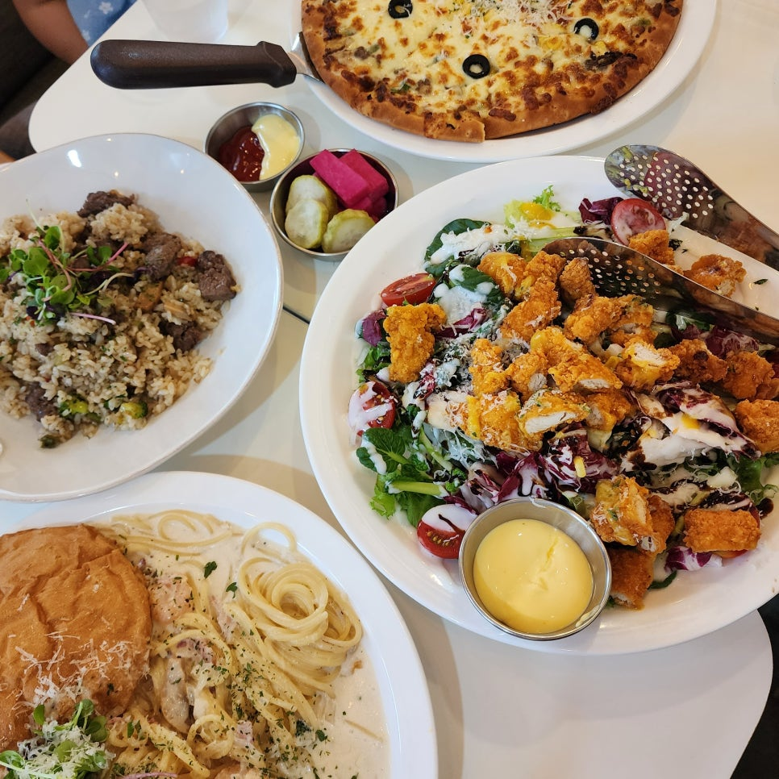
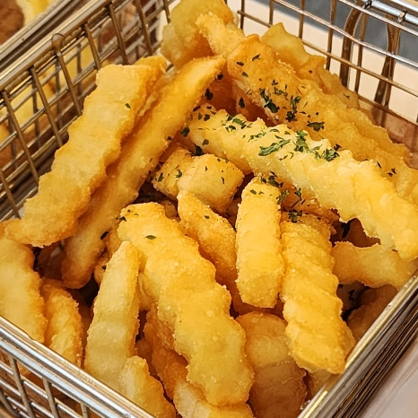
사이드 메뉴로 두툼한 감자튀김이 나왔습니다.
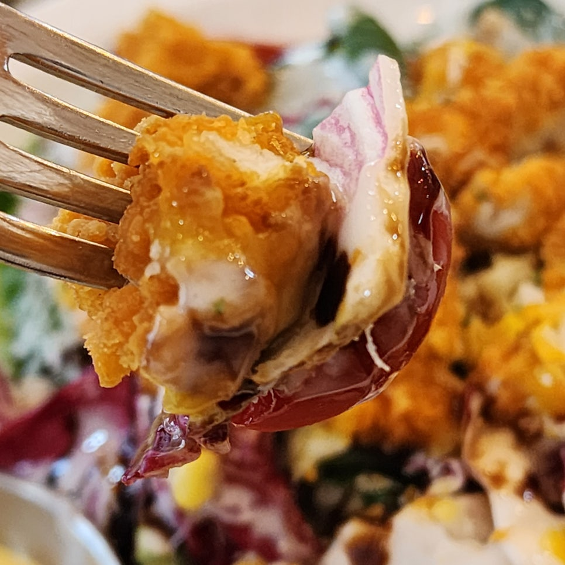
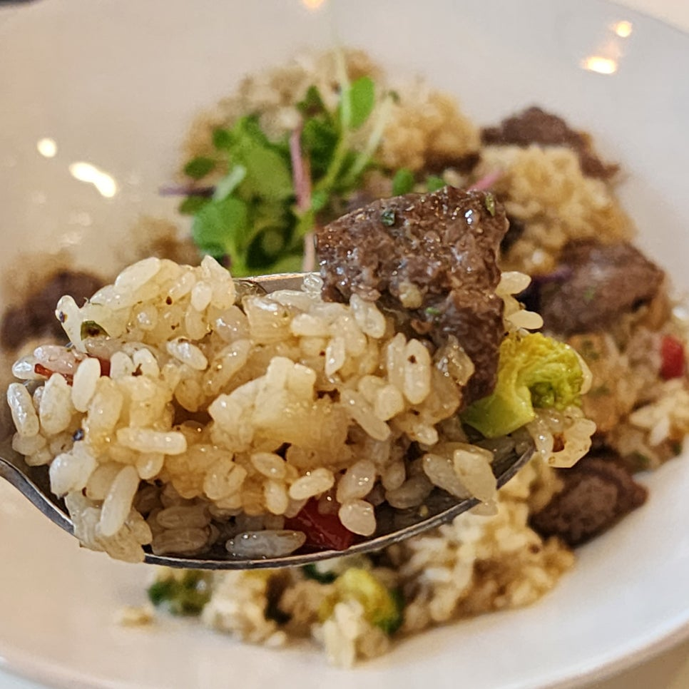
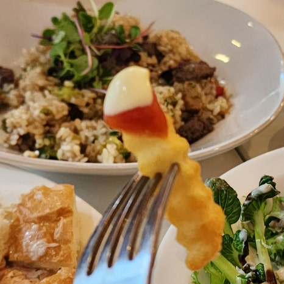
샐러드는 먹어야겠고 맛있게 먹고 싶을 때 찾게 되는 치킨텐더 샐러드. 텐더가 바싹하게 잘 튀겨졌습니다.
고슬고슬하게 잘 된밥으로 만든 비프필라프도 짜지 않고 맛있습니다.
정말 완벽한 한 끼 식사였습니다.
감사합니다.
스푼위에포크
주소 : 경기 안산시 상록구 안산대학로 130
전화번호 : 031-409-1526
음식 종류 : 이탈리아
가격대 : \10,000 ~ \20,000
웹사이트 : 식당 정보 바로가기